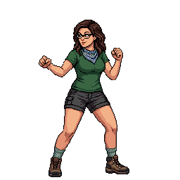
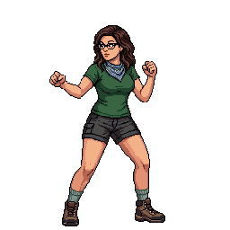

Standing punch

Needs another direction pass: the extension switches Kristen into a right-facing side profile. This does not preserve her left-facing direction through the punch.
9 frames, 256×256; straight extension and recoil are visible. View all frames.
Mid-height side kick

Needs another motion pass: the extension reads as a front-facing knee lift/front kick rather than a horizontal side kick toward screen-left. Her upper-body facing also turns toward the viewer.
9 frames, 256×256; the support boot stays close to the baseline, but the requested kick direction and shape are not achieved. View all frames.